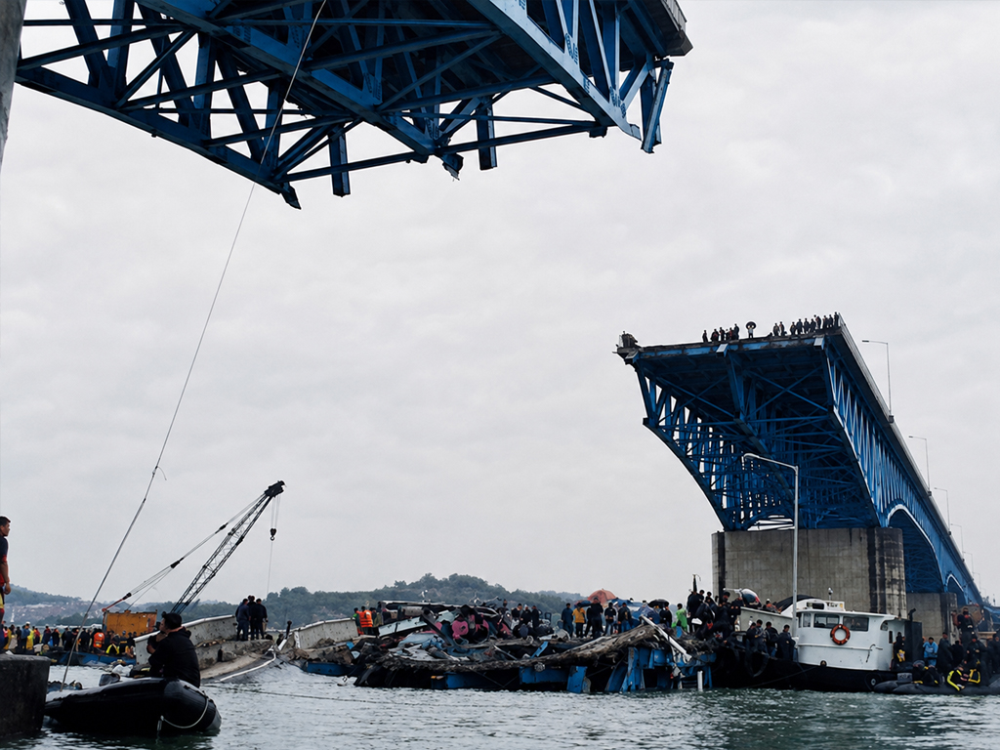
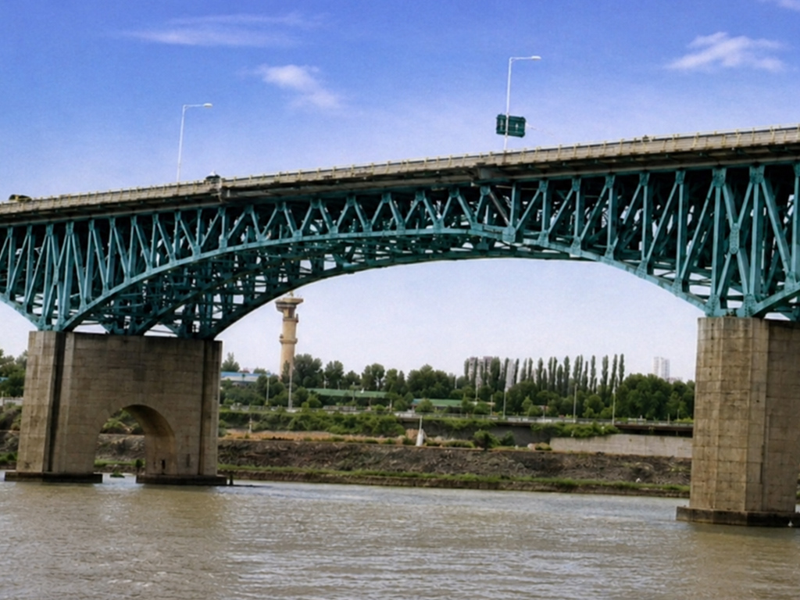
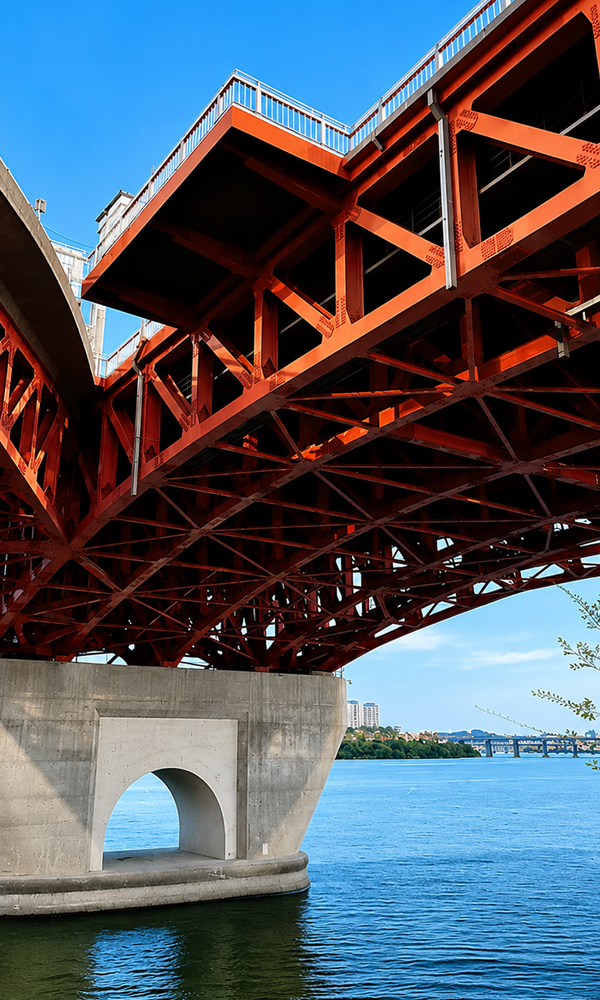
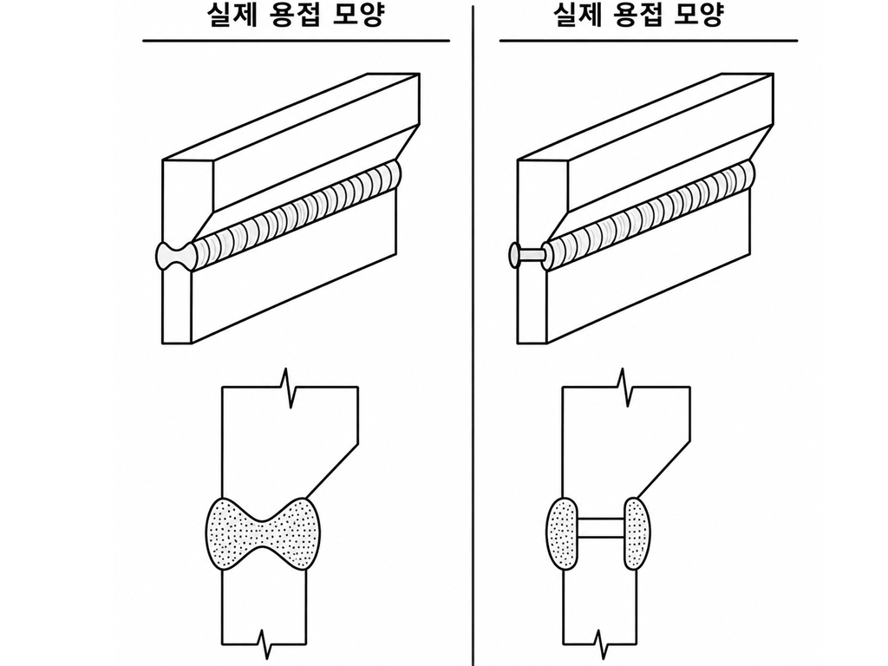
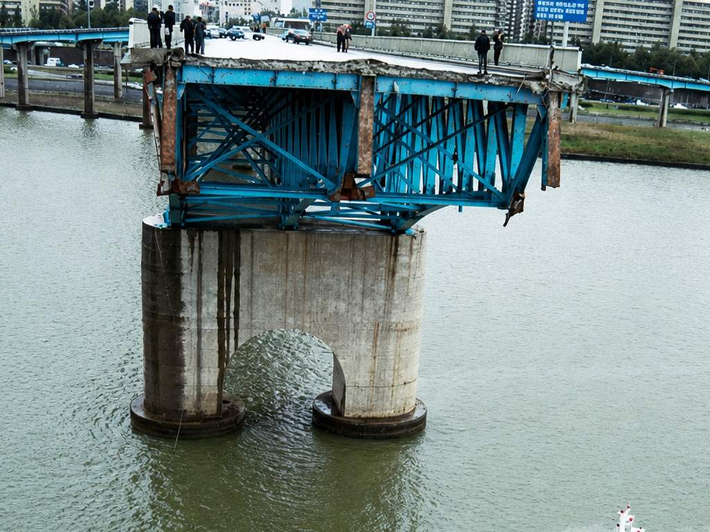
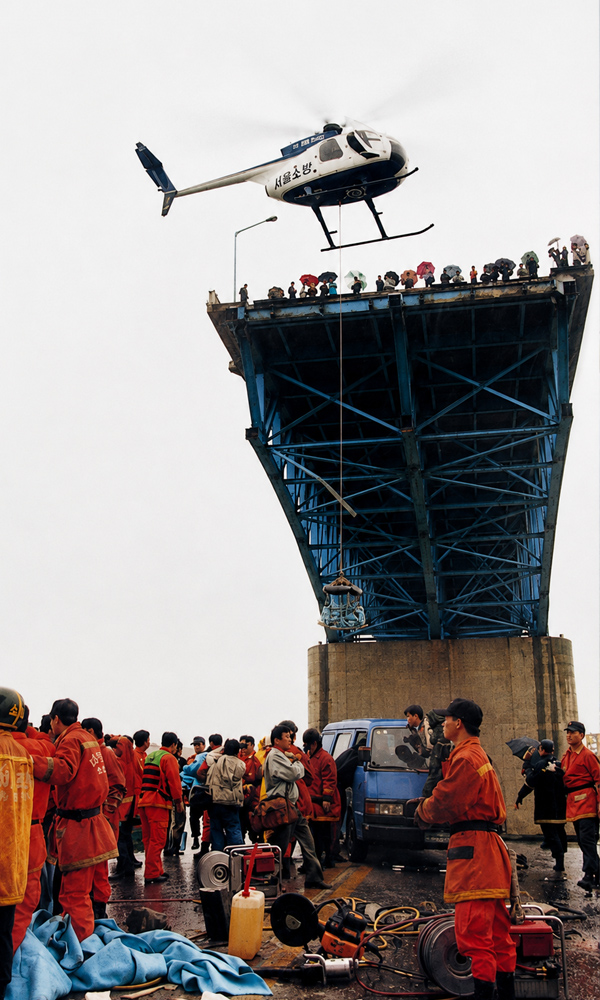
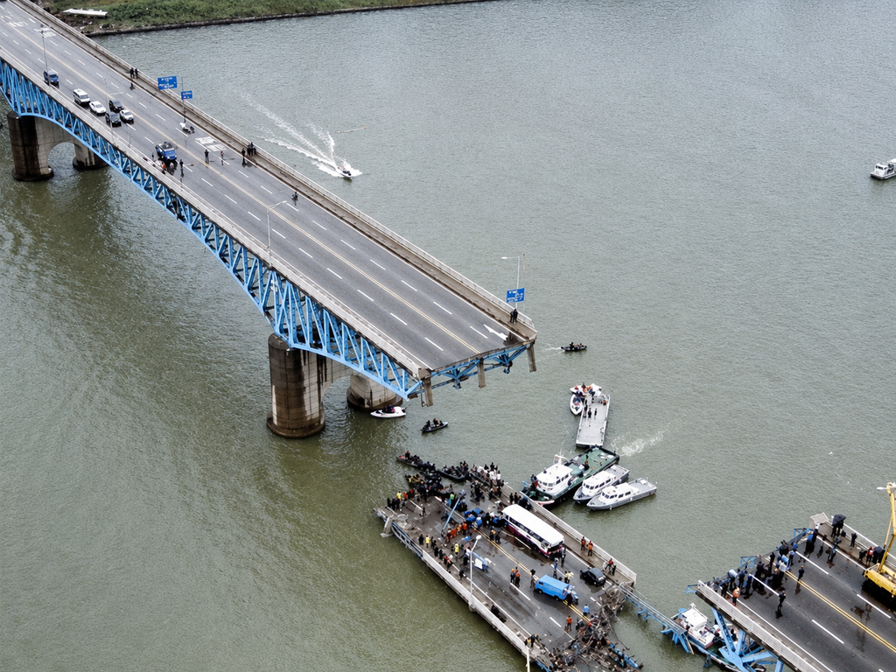

SEONGSU BRIDGE DISASTER 1994
The Seongsu Bridge disaster was a catastrophic structural failure when a 50-meter portion of the upper truss span of the Seongsu Bridge over the Han River in Seoul during the morning rush hour.
Six vehicles, including a bus, a van and four passenger cars, fell into the river, causing 32 deaths.
The steel truss design proved susceptible to fatigue under traffic volumes that rose far beyond original forecasts.
Official inquiries concluded that the main cause was a series of construction defects, particularly inadequate partial penetration welds at critical joints that initiated cracks under cyclic loading.
These defects were made worse by fabrication errors and weak quality control during erection.

HISTORICAL CONTEXT
The structure used a steel truss superstructure resting on concrete substructures and was configured as a Gerber truss system.
This system employed cantilever arms extending from the main piers that supported a central suspended span, allowing loads to be shared through hinged joints.
The central truss section was 672 meters long and included a 48-meter suspended span linked by I type cross section members. The overall design was based on an 18 ton standard vehicle load. Steel truss members were joined with hand applied fillet welds, a common method for field assembled truss bridges of that era.

GERBER TRUSS AND TRAFFIC LOADS
Although the Gerber configuration efficiently crossed the width of the river, it depended on welded connections in fracture critical members without redundant load paths, reflecting typical practices in 1970s Korean bridge engineering under pressures of rapid urbanization.
The project formed part of a broader strategy for bridging the Han River in Seoul and was intended to carry two-way traffic flows that soon exceeded initial estimates.
Throughout its service life, actual daily traffic far exceeded the original design assumption of about 80,000 vehicles, reaching more than 160,000 vehicles per day by October 1994.
Post collapse studies indicated that even if traffic had stayed within the design loads, failure would have occurred after around 12 years of use.

FAILURES
From its completion in 1979, the Seongsu Bridge suffered from serious shortcomings in inspection and maintenance regimens, largely because there were no well-defined technical standards for managing in service truss structures and performing welding repairs.
There was no system for detecting fatigue cracks or corrosion. This allowed ongoing deterioration, including rust build up at critical joints and unresolved stress concentrations.
Even when problems were noticed (such as weld defects and reports of shaking and loose components) the response consisted mainly of emergency welding with no full structural investigation.
WELD INSPECTION
Radiographic testing carried out after the collapse revealed defective welds in 110 of 111 examined connections, with penetration depths less than half of the required 18 millimetres in every case, some as low as 2mm.
These deficiencies played a direct part in the brittle failure of connection pins and the eventual truss collapse.
ENGINEERING DEFECTS
A joint investigation by Seoul City and the Korean Society of Civil Engineers, supported by on-site inspections on October 27, found that the truss design did not provide adequate stress relief in the steel cross-sections, allowing fatigue cracks to form and grow under repeated loading.
The investigations stressed that welding defects rather than corrosion alone were the fundamental engineering weakness.
The city’s response previously had been limited to painting over the rust rather than undertaking proper structural repairs.

CONNECTION FAILURE
No basic design error in the structural design were identified, but the lack of NDT methods such as X ray inspection during fabrication revealed serious gaps in quality assurance that reduced the load bearing capacity of the bridge.
Investigators determined that the initial failure occurred at one of the nine connection pins linking the truss members of the collapsed span.
Corrosion in these pins and in nearby welds had further deteriorated the structure.
These defects reduced the effective cross-sectional area and created stress concentrations that eventually caused fractures in the upper pin plate and weld joints.

“The investigations stressed that welding defects rather than corrosion alone were the fundamental engineering weakness.”
ROBUSTNESS (A BRIEF NOTE)
In the event of a sudden member loss the continued stability and performance of a bridge can be broadly attributed to its redundancy (the bridge’s ability to develop alternate load paths).
This is one measure of “Robustness”.
Alternate load paths are the changes in load distribution taken on by other members when a critical member fails which helps prevent further propagation of the failure. In this sense the redistribution of loads is a key factor in how failures develop in truss structures.
Bridge redundancy is therefore closely linked to the concept of robustness. There are several definitions of the term robust in structural engineering and for truss type bridges it is commonly taken to mean the insensitivity of the structure to initial damage.

INFLUENCE
The collapse of the Seongsu Bridge brought attention to welding practice, especially the use of partial penetration welds in fracture critical truss connections.
In response, engineers placed more weight on full penetration welds, ultrasonic testing during fabrication and avoidance of stress concentrations reduce the risk of brittle fracture in comparable steel structures.
The incident also encouraged the development of reliability-based fatigue assessment methods that use probabilistic models to predict long term deterioration caused by overloads, since the bridge was found to have carried vehicles up to 47.3 tons despite a design limit of 36.3 tons.
Gaps that had existed before the collapse in maintenance standards for welding and for adjusting loads were closed through periodic non-destructive testing and revised traffic capacity ratings, reducing risk in older infrastructure nationwide.
Internationally, the collapse served as an important case study in truss bridge behaviour, guiding methods for simulating failure progression and designing redundancy, such as alternative load paths, so that the failure of a single critical element would not cause total collapse.
TYPICAL STEEL FAILURES
Steel failures (Lopez et al, 2023)

As we can see from the above image, rupture of bar elements accounts for the majority of failures in steel truss bridges.
This contrasts sharply with previous work that suggests most bridge failures are caused by scour.
It is not a like for like comparison because not every steel truss bridge spans a waterway and is therefore not affected by scour, however it remains a very telling statistic.